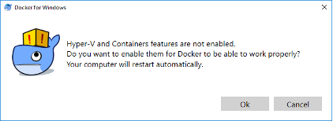
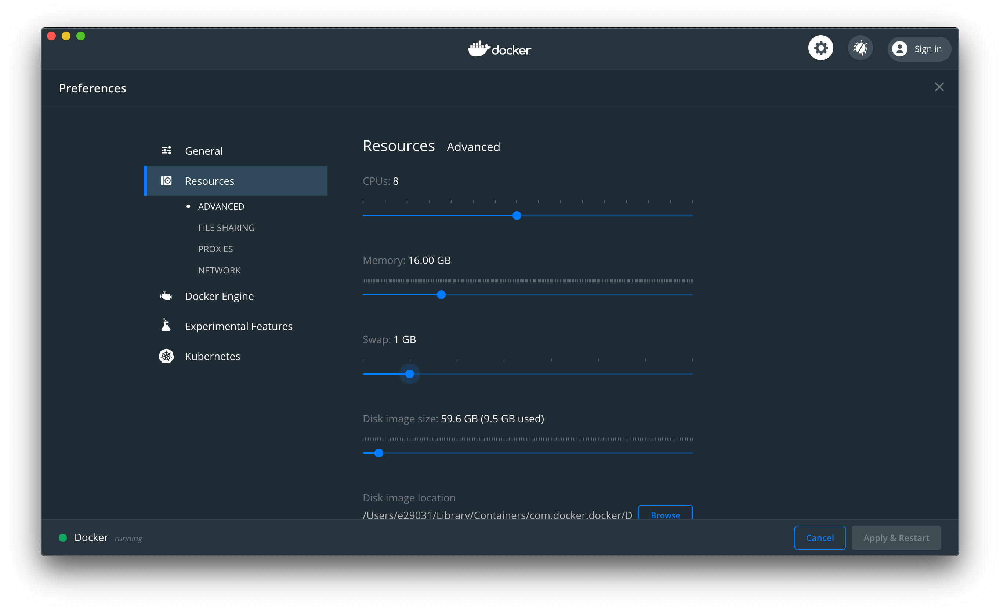

OLIVE Martini Docker Container Setup
Introduction
This page guides through the installation, setup, and launching of a docker-container based OLIVE software package featuring the new "OLIVE Martini" container setup. This new delivery method includes the usual OLIVE server and plugin capabilities delivered in the past, but includes a new addition - Batch GUI capabilities powered by the new Raven GUI that can be accessed through your web browser. For instructions on how to use this new GUI once you have the software properly installed, check out the Raven Web GUI page.
The overall installation process is very similar to previous Docker container based OLIVE deliveries in the past, with the main changes affecting how the OLIVE container is managed for startup, shutdown, etc.
Download, Install, and Launch Docker
First you will need to obtain and install Docker - this can be done in a number of ways, the easiest of which is likely through the Docker website. The Community Edition is free (though you now need to create an account with Docker to obtain it), should fulfill most or all OLIVE needs, and is available for several operating systems, including Windows 10. Docker is available here - https://www.docker.com/community-edition and up-to-date installation instructions can be found from Docker.

Once Docker is installed, launch it to proceed. When running Docker for the first time, if you are using a Windows OS, you may be prompted to enable some Windows features that are not enabled by default, but are required by Docker to run; Hyper-V and Containers. Select “Ok” and wait for the computer to restart to enable these features. Docker should automatically start up once the computer has restarted.

Adjust Docker settings (RAM, Cores)
If you are running Docker on Windows or MacOS, there may be some extra required configuration. By default, Docker is assigned one or two CPU cores, and only 2GB of memory. In order to effectively run the OLIVE docker container, you will need to increase the Memory allocated to Docker to at least 8 GB (or 16 GB for some plugins/tasks), depending on which plugins will be run. If you have cores available, you can obtain greater performance by also increasing the CPU allocation. Allocating more cores and more memory will almost always improve OLIVE performance.


These settings are accessed by right clicking the Docker icon in the notification tray on Windows (notification bar if using MacOS), selecting ‘Settings’ and navigating to the ‘Advanced’ tab, then adjusting the CPU and Memory sliders as desired.


Download OLIVE Docker Package
Now that Docker is installed and properly configured, you can download and uncompress the OLIVE Docker package from the SRI-provided share link. The link, delivery method, and exact filenames will vary from delivery to delivery, but once you have downloaded and unpacked the software archive:
olive5.2.0-martini-1August2021.tar.gz
You should find similar content to below unless told otherwise:
- olive5.2.0/
- api/ - (Optional) Directory containing the Python and/or Java OLIVE Client utilities
- docs/ - Directory containing the OLIVE documentation
- martini/
- martini-docker.tar - Docker container including OLIVE, the Raven Web GUI, the OLIVE Web Broker, and various other utilities, including an html server to host this documentation
- martini.sh - Multi-purpose utility and management script for the OLIVE Martini Docker container
- martini.ps1 - Same as above, but for Windows PowerShell
- martini.bat - Wrapper script to allow the above script to execute on certain Windows systems. Use this first.
- OliveGUI/ - The OLIVE Nightingale GUI (not included in all deliveries)
- bin/
- Nightingale
- bin/
- oliveAppData/
- plugins/
- sad-dnn-v7.0.0 – Speech Activity Detection plugin
- Actual plugins included will depend on the customer, mission, and delivery
- plugins/
- workflows/ - Directory containing OLIVE workflows; actual included worfklows will depend on the customer, mission, and delivery
Load the OLIVE Docker Image
The first setup step is to load the OLIVE Docker image. Loading the image is as simple as opening a command prompt like PowerShell in Windows or Terminal in MacOS, navigating to the directory containing the OLIVE Docker image, and following the examples below.
Loading the docker image (only necessary once).
$ cd C:\Users\<username>\olive5.2.0\martini
$ docker load -i martini-container.tar
$ cd /home/<username>/olive5.2.0/martini
$ docker load -i martini-container.tar
This operation can take some time; quite a few minutes, and you may not see feedback right away. Once you are returned to the command prompt, if there are no error messages, loading is complete and you can proceed.
Other Required Software
This container has been tested using docker version 19.03.9 API version 1.40, but should work with any recent version.
The Olive Web UI should work with any recent, common web browser, but has been tested mostly with Chrome (90.0.4430.212), but also Edge (89.0.774.77), and Firefox (87.0).
The Python scripts included should work with any 3.x version of Python, but have been tested with Python 3.7.9
Operating Systems Note
There are three provided martini management scripts:
martini.shmartini.batmartini.ps1
The functionality of each is intended to be identical, and these are provided as different options for different operating systems for convenience.
The martini.sh script should be used for linux and for macOS. martini.ps1 should be used when managing the OLIVE Martini container from Windows PowerShell, and martini.bat, which calls martini.ps1 internally, should be used if martini.ps1 cannot execute for permission reasons in PowerShell, and when managing OLIVE Martini from Windows Command Prompt (cmd).
The examples below attempt to show all three being used, but in the text, they are refered to as simply martini.sh for brevity. Their features and functionality are the same.
Configuring Ports (Optional)
By default the container exposes seven ports on the host machine running the container:
- 9900
- 9901
- 9904
- 9905
- 9970
- 9980
- 9988
If you want to change them, there are two ways to do this:
-
You can directly edit the
martini.shormartini.ps1file to change these seven variables near the top of the file:- OLIVE_HOST_PORT_OLIVESERVER
- OLIVE_HOST_PORT_OLIVESECOND
- OLIVE_HOST_PORT_TEST
- OLIVE_HOST_PORT_BROKER
- OLIVE_HOST_PORT_DOCSERVER
- OLIVE_HOST_PORT_WEBSERVER
- OLIVE_HOST_PORT_REVERSE_PROXY
Note that if you are using Windows Command Prompt (cmd) or Windows PowerShell via
martini.bat, edit themartini.ps1file, as it is called bymartini.batduring operation.Doing this will use the new ports every time the container starts.
-
Alternatively, you can set shell variables, with the same names as above, to the port numbers you want to use. This method will temporarily override the ports used to what you have set, but subsequent container starts will revert to the original, if the shell/environment variables are no longer set.
Configuring Plugins, Workflows, and Documentation (Optional)
If you are using the default installation, then no configuration is required. Your workflows must be in a directory called "workflows", your documentation in a directory called docs/, and your plugins in a directory called oliveAppData/plugins/, and the martini.sh script in an oliveDocker directory that is adjacent to docs/, workflows/, and oliveAppData/.
If your data is not located in these default locations, then you have two ways to configure the OLIVE Martini container (similar to configuring ports described above):
-
You can directly edit the
martini.shfile to change these three variables near the top of the file:- OLIVE_HOST_PLUGINS
- OLIVE_HOST_WORKFLOWS
- OLIVE_HOST_DOCSITE
Doing this will use the new locations every time the container starts.
-
You can set shell variables to the full path names of the locations of your plugins, workflows, and documentation. Set these shell variables:
- OLIVE_HOST_PLUGINS
- OLIVE_HOST_WORKFLOWS
- OLIVE_HOST_DOCSITE
But remember, neither of these is required, if your plugins, workflows, and documentation are all in the default locations.
You can also (optionally) edit martini.sh to change the DELAY count. It can take a few to 10 seconds or so for all the servers to start on the container, depending on the hardware performing the operation. Normally the martini.sh returns immediately, even if the servers have not had time to start. If you don't like that behavior, you can set the DELAY variable near the top of the file to the number of seconds it takes to start all the servers, usually 7 or 10 seconds. This would mean that the command will not return until the servers are actually up and running.
Testing The Installation
There are a few ways to quickly sanity check that the installation is properly configured, up and running.
-
Use a web broser to see what workflows are available. Go to URL
host:9905/api/workflows. You should see some json text. -
Use a web browser to test the Olive Web UI. Go to URL
host:9980. You should see a page with "SRI International" in the upper right corner, and a section for "Media" and a section for "Workflows". (See below for getting started with the Olive Web UI.) -
Use a web browser to look at the documentation. Go to to URL
host:9970. You should see a web page titled "Open Language Interface for Voice Exploitation (OLIVE)".
Controlling the Container
Controlling and managing the OLIVE Multi container is made much easier with the provided martini.sh management script. Using this script is as simple as running the script, and providing a command:
$ ./martini.sh <command>
$ .\martini.bat <command>
The list of commands available to martini.sh are:
help- Display the olivemulti.sh help statement (shown below)start- Start the container.stop- Stop the container.list- List the running container(s), if any.log- Display the OLIVE Server log in the terminal;ctrl + cto exit. Useful to expert users for troubleshooting.status- Show the status of the processes on the container.net- Show the ports on the host that the container is linstening on.cli- Starts a shell on the container for debugging or operating the OLIVE CLI tools.
More details for each command, how to use it, and the designed functionality can be found below.
Important "Host" Notes
All of these commands assume that your container is running on a machine called host. When performing the operations below, replace host with the actual name of the host machine. If all operations (client and server) are running on the same machine, this may be simply localhost. If they are on separate machines, you may have to use the actual hostname, or IP.
martini.sh help
Prints out the martini.sh help statement, reminding the user of the available commands:
You must provide one argument which is a command.
Supported commands include: cli, help, list, start, stop, status, net.
olivemulti.sh start: Start the container.
olivemulti.sh stop: Stop the container.
olivemulti.sh list: List the running container.
olivemulti.sh status: Shows status of the processes on the container.
olivemulti.sh net: Shows the ports on the host that the container is listening on.
olivemulti.sh cli: Starts a shell on the container for debugging.
martini.sh start
Starts up a previously built container. Note that it can take several seconds for all the servers to start on the container. You can edit the DELAY variable at the top of your script to a number (discussed above), in which case this command will wait that many seconds before returning, so you can be sure the servers are running when the command returns.
martini.sh stop
Stops a running container.
olivemulti.sh status
Prints out some basic information on the processes running, network ports, workflows and plugins which are active on the container.
$ martini.sh status
Message brokers running:
Processes: 1
Plugins: aed-enrollable-v1.0.1 aln-waveformAlignment-v1.0.0 env-indoorOutdoor-v1.0.0 env-multiClass-v2.0.0 env-powerSupplyHum-v1.0.0 env-speakerCount-v1.0.0 lid-embedplda-v2.0.1 nsd-sadInverter-v1.0.0 sad-dnn-v7.0.1 sed-rmsEnergy-v1.0.0 sid-dplda-v2.0.1 voi-speakingStyle-v1.0.0 voi-vocalEffort-v1.0.1 vtd-dnn-v7.0.1
Workflows: Acoustic-Event-Detection.workflow Background-Noise-Detection.workflow SAD_SID_LID.workflow Speech-Analysis.workflow
tcp 0 0 0.0.0.0:5589 0.0.0.0:* LISTEN 0 7905040 72/python
tcp 0 0 0.0.0.0:5590 0.0.0.0:* LISTEN 0 7915534 73/python
tcp 0 0 0.0.0.0:8070 0.0.0.0:* LISTEN 0 7910329 9/python
tcp 0 0 0.0.0.0:5004 0.0.0.0:* LISTEN 0 7917573 138/nginx: master p
tcp 0 0 0.0.0.0:5005 0.0.0.0:* LISTEN 0 7914186 15/java
tcp 0 0 0.0.0.0:8080 0.0.0.0:* LISTEN 0 7917572 138/nginx: master p
tcp 0 0 0.0.0.0:80 0.0.0.0:* LISTEN 0 7897930 26/httpd
tcp 0 0 0.0.0.0:5588 0.0.0.0:* LISTEN 0 7915524 16/python
unix 2 [ ACC ] STREAM LISTENING 7915525 16/python /tmp/executor_714acd0b-0d0d-4259-84c2-127b84b8d26c.pipe
unix 2 [ ACC ] STREAM LISTENING 7905043 80/python /tmp/pymp-vu6okza8/listener-4e5_70ll
Httpd (web-ui) servers running: 6
Nginx (reverse proxy) server running: 2
Olive servers running: 12
Active Internet connections (only servers)
Proto Recv-Q Send-Q Local Address Foreign Address State
tcp 0 0 0.0.0.0:5589 0.0.0.0:* LISTEN
tcp 0 0 0.0.0.0:5590 0.0.0.0:* LISTEN
tcp 0 0 0.0.0.0:8070 0.0.0.0:* LISTEN
tcp 0 0 0.0.0.0:5004 0.0.0.0:* LISTEN
tcp 0 0 0.0.0.0:5005 0.0.0.0:* LISTEN
tcp 0 0 0.0.0.0:8080 0.0.0.0:* LISTEN
tcp 0 0 0.0.0.0:80 0.0.0.0:* LISTEN
tcp 0 0 0.0.0.0:5588 0.0.0.0:* LISTEN
martini.sh cli
Starts up a shell within the OLIVE Martini container. The container must already be running. You can use this shell to run Olive CLI commands, such as:
$ martini.sh cli
# Show the plugins installed on the container:
$ ls /home/olive/olive/plugins/
# Show the audio files on the container, which you can use as examples:
$ ls /olive-data/media/shared/
# Run an analysis
$ localanalyze /home/olive/olive/plugins/lid-embedplda-v2.0.1/domains/multi-v1 /olive-data/media/shared/Komodo_dragon_en.wav.lst
# See the results
$ more output.txt
This can also be used for troubleshooting. When running with the cli command, your shell starts in /opt/olive. This is where the runtime is installed, and where things are run within the container.
In /opt/olive:
- Running martini.sh status will print out what is running, and what network connections are active. And looking at this script will tell you what should be running.
- Do not run martini-process.sh. That is run when the container starts.
The /home/olive/olive directory is the other important directory. Here:
- The
martini-process.logfile is the output of the script which starts all servers. - The
env.logfile (if it exists) are the shell variables set. - The other log files here were started by each server.
- The
plugins/directory contains all plugins. - The
server/directory contains server logs.
martini.sh net
Lists the project network ports that are active on the host machine, the machine running the container.
martini.sh list
Lists the project containers that are running.
martini.sh log
Displays the OLIVE Server log; useful for checking on the status of the OLIVE server in case of a malfunction, or troubleshooting unexpected behavior.
Using The Container
Once you have started up the container using the martini.sh start command described above, you are ready to begin using it. Your container has four different applications within it, which you can use - the Raven Web UI, the OLIVE Server itself, the OLIVE Message Broker, and a web server hosting the OLIVE Documentation. In addition, most OLIVE deliveries typically ship with the interactive Nightingale Forensic GUI for performing close file analysis using OLIVE plugins and workflows, as well as both Java and Python OLIVE Client CLI example applications.
Note that if you are attempting to connect from the same machine, you can access this feature at localhost:9980. If you are accessing from a different machine, you must use the full hostname, or IP address. For convenience, the martini.sh script outputs the hostname and corresponding port for several activities:
$ martini.sh start
Started the container.
From this machine:
Run Nightingale (Olive GUI) using server localhost and port 9900.
Use a web browser to localhost:9970 to see the documentation.
Use a web browser to localhost:9980 to use the Web UI.
If using the API point to the server running on localhost:9905.
From any other machine:
Run Nightingale (Olive GUI) using server OLIVE-MBP16 and port 9900.
Use a web browser to OLIVE-MBP16:9970 to see the documentation.
Use a web browser to OLIVE-MBP16:9980 to use the Web UI.
If using the API point to the server running on OLIVE-MBP16:9905.
Installed plugins (mounted from /Users/user1/olive5.2.0/oliveAppData/plugins/) are:
aed-enrollable-v1.0.1 env-speakerCount-v1.0.0 sid-dplda-v2.0.1
aln-waveformAlignment-v1.0.0 lid-embedplda-v2.0.1 voi-speakingStyle-v1.0.0
env-indoorOutdoor-v1.0.0 nsd-sadInverter-v1.0.0 voi-vocalEffort-v1.0.1
env-multiClass-v2.0.0 sad-dnn-v7.0.1 vtd-dnn-v7.0.1
env-powerSupplyHum-v1.0.0 sed-rmsEnergy-v1.0.0
Installed workflows (mounted from /Users/user1/olive5.2.0/workflows/) are:
Acoustic-Event-Detection.workflow SAD_SID_LID.workflow
Background-Noise-Detection.workflow Speech-Analysis.workflow
Please choose the appropriate hostname and port number for your desired activity and host situation.
Raven Web UI
To connect to the Raven Web/Batch GUI, open a web browser and navigate to URL host:9980. Once there, follow the on-screen prompts to drag-and-drop one or more audio files to the "local media" dropbox section, select one of the available workflows, and click on the action button in the lower right hand corner. More details for the Raven GUI can be found on its dedicated documentation page: Raven Web UI.
The Documentation
When the container is started, it launches a web server serving this documentation. To view the hosted version, navigate a web browser to URL host:9970.
The OLIVE Server
This is used internally by the Olive Web UI and the Olive Message Broker. You can also write Python programs which make calls directly to the server. See seperate documentation on olivepy for details.
The OLIVE Message Broker
This is used internally by the Olive Web UI.
Nightingale Forensic UI
This GUI provides access to the full suite of available OLIVE plugins and workflows, for performing close file analysis. It offers powerful audio visualization tools, live streaming capabilities, and a number of other useful features. For more information on what Nightingale offers and how to get started using it, please refer to the Nightingale GUI dedicated documentation page.
As a quick primer, the Nightingale UI is typically provided in:
<...>/olive5.2.0/OliveGUI
Nightingale requires OpenJDK Java 11. Once this is installed, you can run it by navigating to:
<...>/olive5.2.0/OliveGUI/bin/
And either double-clicking or running the Nightingale (macOS, linux) or Nightingale.bat (Windows) script appropriate for your OS.
$ ./Nightingale
$ .\Nightingale.bat
NOTE that the Nightingale launcher scripts are designed to be launched from this bin/ directory in order to properly link to other folders that it uses within this package.
NOTE that Nightingale will need to connect to the oliveMulti container using port 9900 by default. This should be set for you before the software ships if the GUI is accompanying an oliveMulti software package.
OLIVE Example API Client Implementations
OLIVE is also generally shipped with example API Client implementations in both Java and python. They are usually included in:
<...>/olive5.2.0/api/[java, python]
These can provide both a command-line-based method of interacting with the OLIVE server, and as integration examples providing templates or code bases for some integration teams.
Final Notes / Troubleshooting
There are a couple of known minor issues that may occur the first time you are starting the OLIVE Martini container on a new device. Since Docker will prompt asking for permission to share a few locations on the machine, in order to access the included plugins, workflows, and documentation, the container cannot initially read these and may report no plugins or workflows found at first. Once access is granted for Docker to share these locations, you should be able to check the plugins that are loaded by checking martini log, or in the extreme case, by stopping and restarting the container:
$ ./martini.sh stop
$ ./martini.sh start
$ .\martini.bat stop
$ .\martini.bat start
It can also take a moment for the Raven UI to populate the available Workflows on the bottom of the interface screen, especially the first time you are loading the web page. If this space is blank, please wait a moment (may take up to a minute on some systems) and/or refresh the page.